NCCOG Library — The Complete Guide
For: Mark, and anyone at New Creation Church of God who uses the library. Last updated: October 22, 2026.
The two things you need, every time:
- The app: https://matt5306.github.io/nccog-library/ (access code: dove-7314)
- Help: email Matt at mstaton53@gmail.com. Say what you tapped and what you saw; a screenshot helps.
Every section below repeats the link, the code and the steps it needs, so you never have to scroll back to find them.
1. What this is, in one minute
The library has three parts that work together:
- The notebooks (100 of them). These are Gemini Notebooks (Google's research tool, formerly called NotebookLM). Together they hold about 46,000 free Christian books, commentaries, sermons, Bibles, journals and old church papers, sorted by topic. You can ask any notebook a question, and it answers from those books and shows you exactly where each answer came from.
- The app. A phone and computer app that lets you find anything in the 46,000 items, build your own study notebook from just the books you pick, and add sermons and books to the library.
- Your study notebooks (20 of them, more when needed). When you build a study, the app copies the books you picked into one of 20 empty notebooks set aside for you. That notebook is fully yours: you can chat, take notes, and make audio overviews, study guides, quizzes, mind maps and reports from exactly those books.
The simple version: find books in the app → put them on your shelf → tap Make my study notebook → about 10–15 minutes later, open the notebook and start asking questions.
Find books Put them on Make my study Open the notebook
in the app → your shelf → notebook → in Gemini and ask
(search or (+ Add to (wait about questions, make
Bible passage) shelf) 10–15 minutes) audio/study guides
2. Getting into the app (one time per phone or computer)
Link: https://matt5306.github.io/nccog-library/ · Access code: dove-7314
- Open the link on your phone or computer. You don't need to sign in to Google for the app itself.
- Type the access code dove-7314 and tap Continue. Your phone or computer remembers it, so you only do this once on each device.
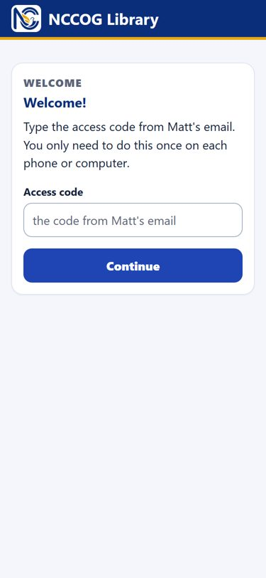
If it says the code is wrong: type it again exactly as dove-7314, all lowercase, with the dash. Still stuck? Email Matt at mstaton53@gmail.com.
Put the app on your home screen (recommended)
Link: https://matt5306.github.io/nccog-library/
- iPhone (must use Safari): 1. Open the link in Safari. 2. Tap the Share button, the square with an arrow pointing up. On some iPhones it's under the ⋯ More button first. 3. Scroll down and tap Add to Home Screen. 4. Tap Add.
- Android (Chrome): 1. Open the link in Chrome. 2. If a bar pops up at the bottom, tap Install. 3. No bar? Tap ⋮ (top right), then Install app or Add to Home screen, then Install.
- Computer: bookmark the link. In Chrome you can also click the small install icon at the right end of the address bar.
The app's Help tab shows these same steps with pictures, and it picks the right ones for your phone automatically.
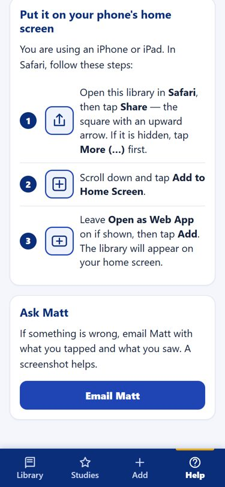
Why install it: it opens like any other app, works better offline, and on Android it appears when you tap Share on a YouTube video, so you can send a sermon straight to it.
3. Finding your way around the app
The app has four tabs along the bottom. They're always there, on every screen.
| Tab | What it's for |
|---|---|
| Library | Search and browse all 46,000 items. Start a study from a Bible passage. This is the home screen. |
| Studies | Your study notebooks: open them, update them, rename, pin or archive them. |
| Add | Add a sermon (YouTube, audio, notes) or a book to the library. |
| Help | Install steps, how-tos, and how to ask several notebooks at once. |
Your phone's Back button works everywhere and takes you one step back.
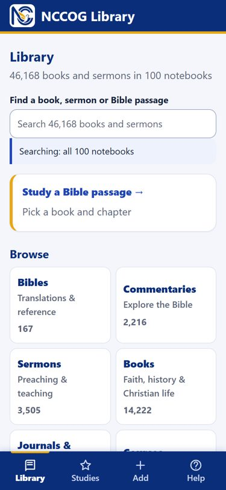
4. Searching the library
Where: the Library tab → the search box at the top. (App: https://matt5306.github.io/nccog-library/ · code dove-7314)
- Type any title, author or subject word: Spurgeon, holiness, Romans, Pilgrim's Progress.
- Small typos are fine. spurgen still finds Spurgeon.
- Part of a word works. rom finds Romans.
- Results show 50 at a time. Tap Show 50 more at the bottom for more.
- Under the search box, a line tells you what's being searched, for example Searching: all 100 notebooks.
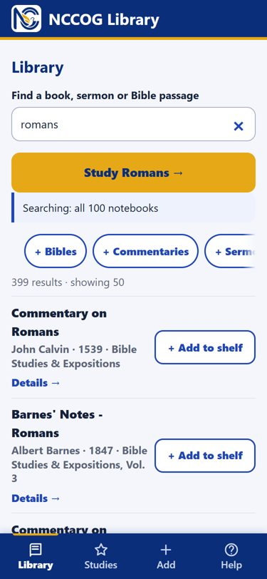
Narrowing results with the filter buttons
Under the search box is a row of buttons: Bibles, Commentaries, Sermons, Books, Journals & Periodicals, Courses. Swipe the row sideways to see them all. The last one is Include Other Faiths.
- Tap a button to show only that kind. Tap it again to turn it off.
- Use Clear search (the × in the search box) to start over.
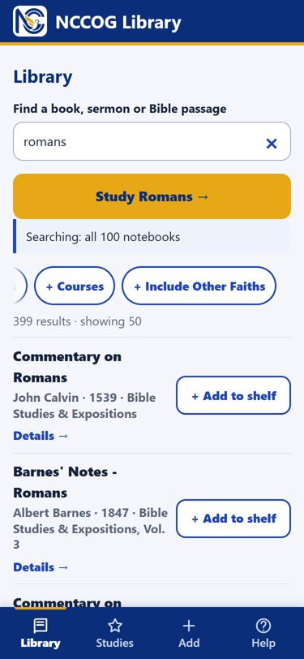
About "Other Faiths"
Two notebooks hold non-Christian scriptures (the Quran, Buddhist and Hindu texts and others) and writings of groups outside orthodox Christianity (for example early Jehovah's Witness, Latter-day Saints and Christian Science writings). They are there only for reference and comparison, clearly labeled, and kept apart:
- They never show up in search unless you tap Include Other Faiths.
- They are never added by any "Add all" button.
- On Bible passage pages, they sit in their own section, switched off until you turn it on.
Looking at one item
Tap a result (or Details →) to see the title, author, year and which notebook it's in.
- Open notebook opens that whole library notebook in Gemini, where you can ask questions about it and the other books in it.
- See this notebook shows the notebook's description and lets you search just inside it.
- + Add to shelf puts the item on your study shelf (see section 6).
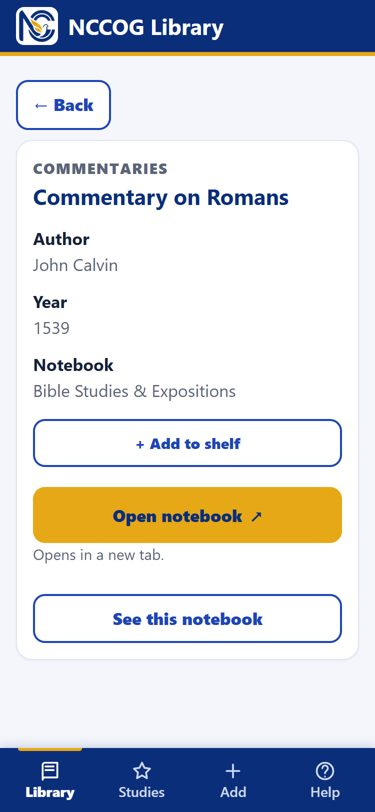
"Part of a bundle": some short works (sermons, tracts, articles) are stored together in one file with others by the same author or from the same journal. If you add one of these to a study, the whole bundle comes with it. That's normal and does no harm. It just uses a little more room.
5. Starting from a Bible passage
Where: Library tab → Study a Bible passage, or type a passage straight into the search box. (App: https://matt5306.github.io/nccog-library/ · code dove-7314)
- Type it: Romans 8, rom 8, 1 Cor 13, John 3:16, 1 john. A suggestion appears; tap it or press Enter.
- Or pick it: tap Study a Bible passage → choose the book (Old Testament / New Testament) → choose the chapter, or Whole book.
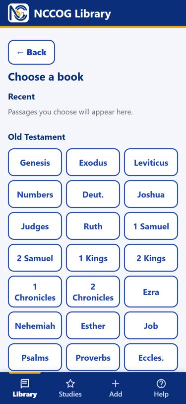
The passage page gathers what the library has on that book of the Bible, in sections:
- Bible translations
- Commentaries on [the book]
- Sermons and teaching
- Books
- Journals and periodicals
- Also mentions [the book]: weaker matches, kept separate
- Other Faiths: off unless you switch it on
Each section has an + Add all button, and every row has its own + Add to shelf button.
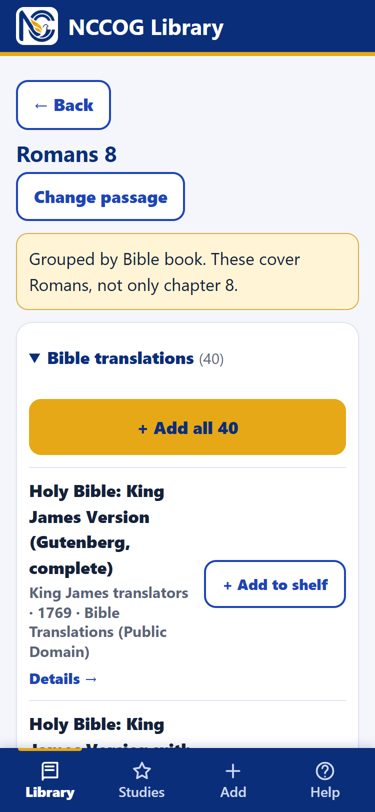
Honest limits of passage pages:
- Items are grouped by Bible book, not by chapter or verse. Romans 8 shows everything about Romans. Most commentaries cover the whole book, so the chapter you want is inside them. The yellow note at the top of the page says this too.
- The grouping comes from the titles of the books. A book whose title doesn't name a Bible book won't appear here. Use search for those.
- Careful with "Add all" on Bible translations. A whole Bible is big: it uses about 5 of the 40 slots in a study notebook (see section 6). Adding all 40 translations would never fit. Pick the 2 or 3 translations you actually want, one at a time.
6. Building your own study notebook
This is the main new feature. A study is a notebook containing exactly the books you choose, and nothing else, so Gemini's answers come only from them.
App: https://matt5306.github.io/nccog-library/ · code dove-7314
Step 1: put books on your shelf
- Tap + Add to shelf on any search result, item page or passage page. The button changes to ✓ On shelf. Tap it again to take the book off.
- Or tap + Add all on a section. A message says what was added, with an Undo button for a few seconds.
- The app never adds the same book twice. "Add all" tells you how many were new and how many were already on the shelf.
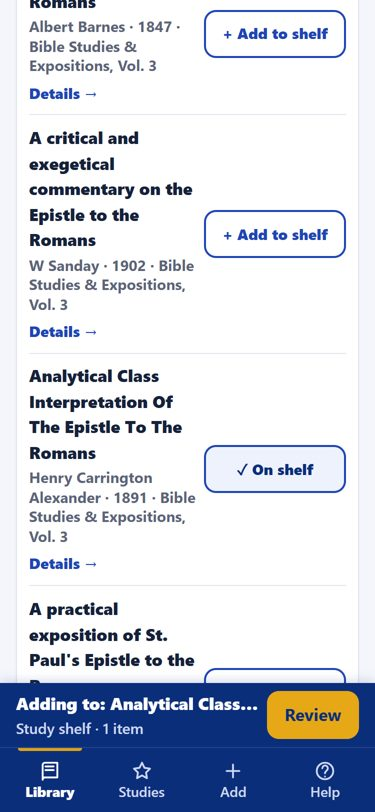
A shelf bar appears at the bottom, above the tabs, showing your study name and how many items are on it. It stays there while you keep browsing. Tap Review when you're ready.
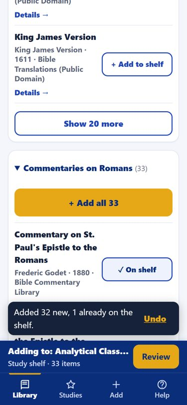
Step 2: review and name it
The Review screen shows:
- Name this study. Pick a name you'll recognize, such as Romans 8 — Sunday series.
- Made by: your name.
- The slot meter, for example uses 5 of 40 slots (explained just below).
- Every item, grouped by kind, each with a Remove button.
- ✓ Saved for your other devices: your shelf is saved on the server, so it's there on your phone and your computer.
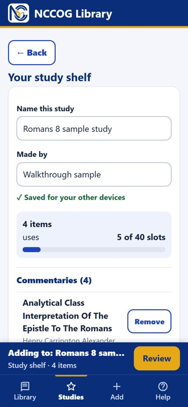
What "slots" are: each study notebook has 40 slots, and each slot holds about 150,000 words.
- Most books, sermons and commentaries fit in 1 slot.
- Big books take 2–3 slots. A whole Bible takes about 5.
- Slot 1 is always used for the study's table of contents.
- If your study needs more than 40 slots, the build button turns off and the app tells you to remove some large books.
- A typical study fits about 25–35 books.
Step 3: make the notebook
Tap the gold Make my study notebook button.
- The app shows Building…. You can close the app; it keeps working on the server.
- Allow about 10–15 minutes before you use the notebook:
- the app usually says Ready within about 5 minutes;
- Gemini then takes a few more minutes to read the new books in.
- That's normal, and it's the same every time. Most of the wait is Google's, and we can't speed that part up.
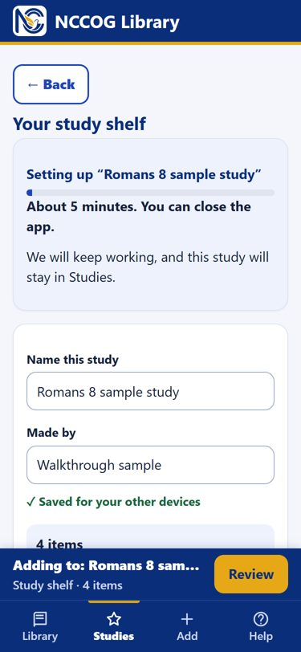
When it's done, the app says Ready and shows Open notebook.
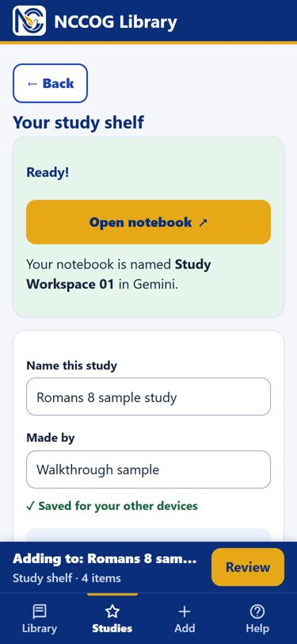
Step 4: open it and use it
Tap Open notebook. It opens in Gemini. The notebook is named "Study Workspace" plus a number (for example Study Workspace 01), not your study's name. Google doesn't let the app rename notebooks. The app always shows which workspace belongs to which study.
Inside the notebook:
- Slot 01 is your table of contents: the study name, who made it, the date, and every book with the slot numbers it's in.
- The other slots hold the books. Unused slots say Empty study slot. Gemini ignores those.
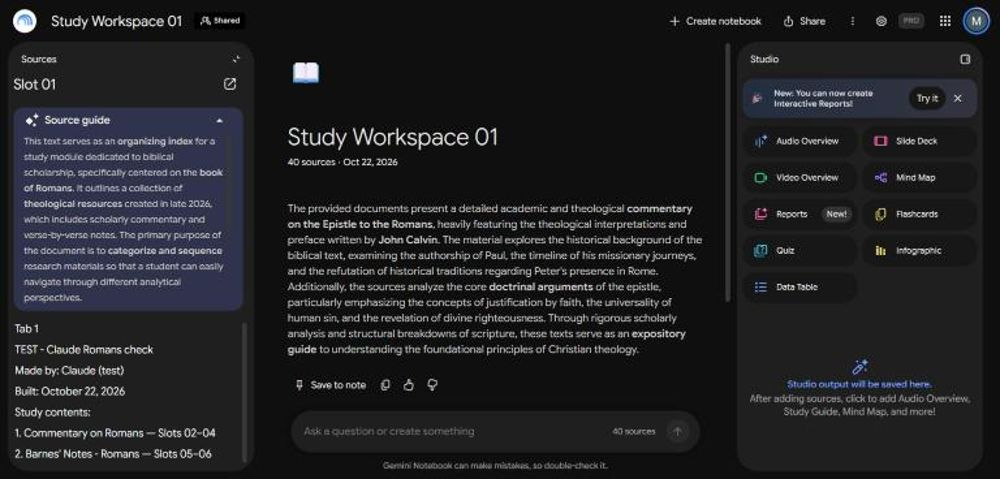
If the notebook still shows empty slots after the app says Ready:
- Wait 5 more minutes and reopen it.
- Or tap any slot on the left, then tap Click to sync with Google Drive at the top of that source.
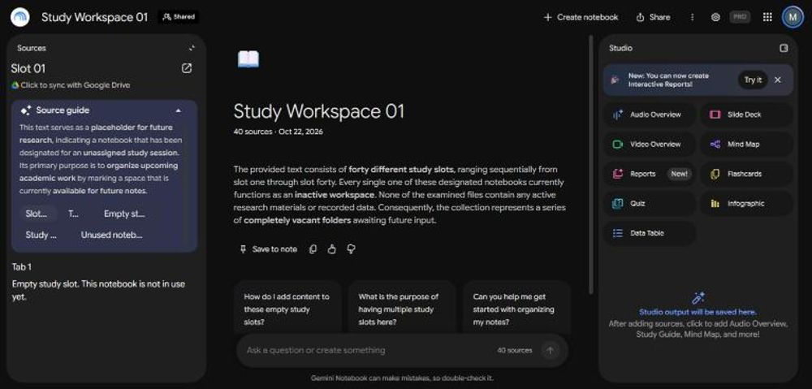
7. Your Studies tab
Where: the Studies tab. (App: https://matt5306.github.io/nccog-library/ · code dove-7314)
Every study you've made is listed, newest first, with a status:
| Status | What it means | What to do |
|---|---|---|
| Draft | Saved but never built | Tap Finish and build |
| Building… | The server is filling the notebook | Wait. Allow 10–15 minutes in total. You can close the app. |
| Ready | The notebook has your books | Tap Open notebook |
| Needs update | You added or removed books since it was built | Tap Update my notebook (allow another 10–15 minutes) |
| Archiving… | The workspace is being emptied | Nothing to do; it finishes by itself |
The bottom of the list shows how many workspaces are free, for example 19 of 20 workspaces free.
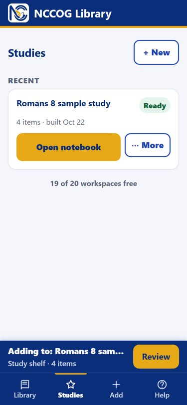
The ⋯ More menu on each study:
- Rename: changes the name in the app. The Gemini notebook keeps its "Study Workspace" name.
- Duplicate: makes a copy you can change without touching the original.
- Pin: keeps a study at the top.
- Archive: empties the workspace so someone can use it again (more below).
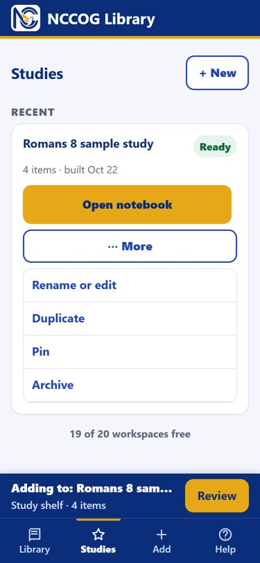
Changing a study:
- Open it from the Studies tab. It becomes your active shelf, and the shelf bar says Adding to: [study name].
- Add or remove books.
- The status becomes Needs update. Tap Update my notebook.
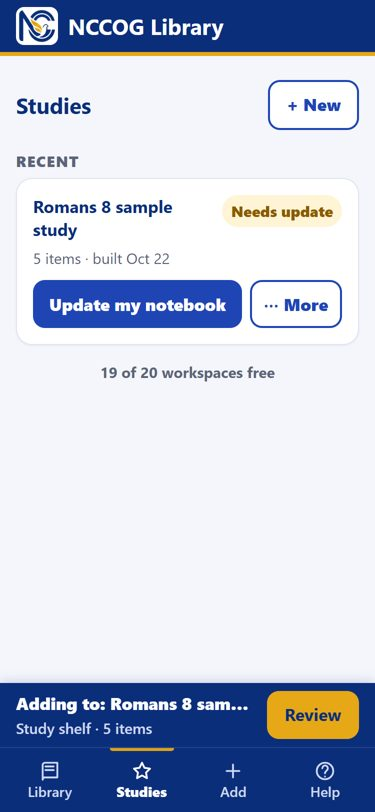
Keeping and archiving:
- A study keeps its notebook for as long as you want. Nothing expires.
- Archive when you're finished with a study. It empties the 40 slots and frees the workspace for the next study. Your book list stays saved in the app, so you can rebuild it later.
- Before you archive, save anything you made inside the notebook (notes, audio overviews, reports). Archiving empties the book slots, but notes and Studio items you created stay in that workspace notebook, and the next study that uses the workspace would see them. Delete them, or copy what you want to keep, before archiving.
- There are 20 workspaces to start. When only 3 are left, Matt gets an email automatically and adds 10 more. Google allows several hundred, so there's plenty of room to grow.
8. Using Gemini Notebook (the notebooks themselves)
Open any notebook from the app (item page → Open notebook, or Studies → Open notebook), or sign in at https://notebook.google.com with your Google account (mstaton2@gmail.com).
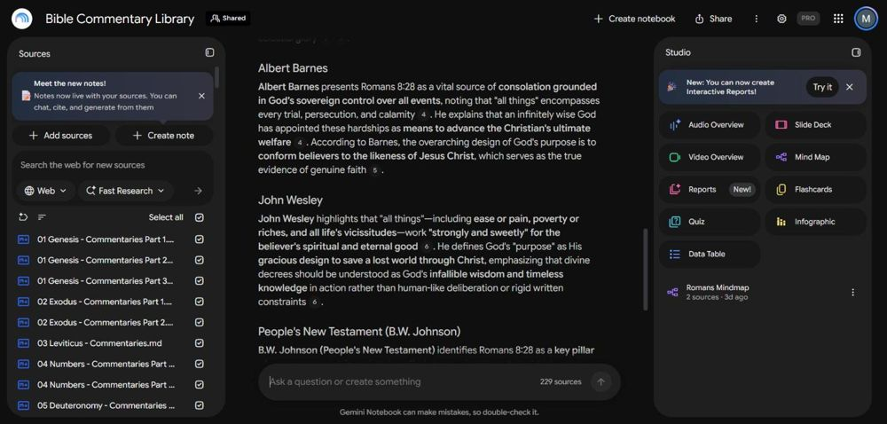
The screen has three parts:
- Left, Sources: the books in that notebook. Tick or untick them to choose which ones Gemini uses for your next question.
- Middle, Chat: ask a question in plain words. Answers have little numbers. Tap a number to see the exact passage it came from.
- Right, Studio: one tap makes an Audio Overview (a podcast-style discussion), Video Overview, Reports (study guide, briefing), Mind Map, Flashcards, Quiz, Slide Deck, Infographic or Data Table from the sources.
What you can do where:
| Library notebooks (the 100) | Your study notebooks (Study Workspace 01–20) | |
|---|---|---|
| Your access | Viewer | Editor |
| Ask questions | Yes | Yes |
| Notes, audio overviews, reports, mind maps and so on | Limited for viewers. If a button is greyed out, use a study notebook. | Yes, fully |
| Add or remove sources | No. Use the app's Add tab. | Please don't. The app manages the 40 slots. Removing a slot breaks the study. |
Good questions to try:
- What do Matthew Henry and Calvin say about Romans 8:28? Show where each says it.
- Make a 6-week Sunday school outline on Romans 8 with discussion questions.
- Where do these authors disagree about entire sanctification?
Honest limits of Gemini:
- Gemini can make mistakes. Always tap the citation numbers and check the source before you preach or teach it.
- Google limits how many questions and audio overviews each person can make. The limit depends on your own Google plan and refreshes over time. If Gemini says you've hit a limit, wait a few hours.
- Very large notebooks (200–300 sources) answer more generally. For focused work, build a study with just the books you need.
9. Asking several notebooks at once (in the Gemini app)
You don't always need to build a study. The Gemini app can read several library notebooks at once and answer from all of them. We tested it: one answer quoted both a Pentecostal healing book and Matthew Henry's commentary, side by side.
Link: https://gemini.google.com (signed in as mstaton2@gmail.com)
- Open Gemini (the website or the Gemini phone app).
- Tap + next to the question box.
- Tap More uploads, then Notebooks.
- Tick 2 or more notebooks, then tap Add.
- Ask your question.
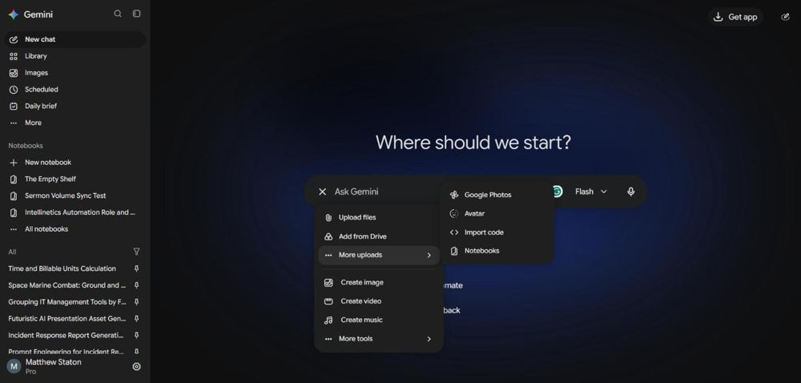
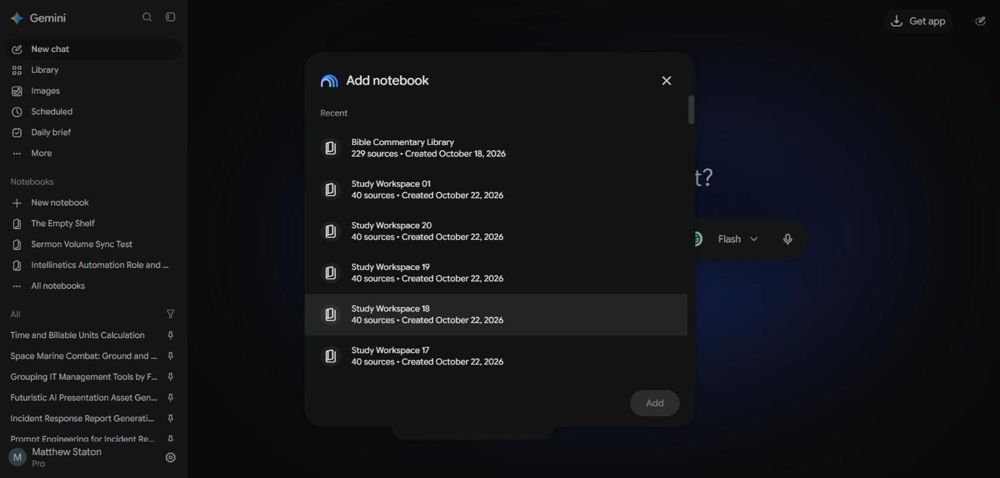
When to use which:
- Several notebooks at once is best for quick, broad questions across whole topics, with no waiting.
- A study notebook is best when you want exactly certain books, plus notes, audio and study guides from them.
The app's Help tab has these same steps.
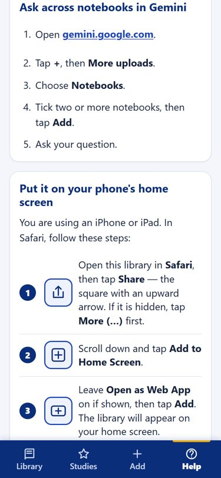
10. Adding a sermon or book to the library
Where: the Add tab. (App: https://matt5306.github.io/nccog-library/ · code dove-7314)
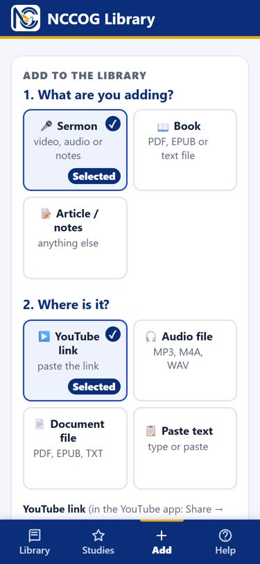
Step 1: what are you adding?
- Sermon: a message you preached or heard.
- Book: a PDF, EPUB or text file.
- Article / notes: anything else (outlines, class notes, articles).
Step 2: where is it?
| Choice | How | Notes |
|---|---|---|
| YouTube link | In the YouTube app tap Share → Copy link, then paste it | The video must be public or unlisted. Enter roughly how many minutes long it is. It takes 1–4 minutes. Brand-new videos (under about 3 days) may not work yet. |
| Audio file | Choose an MP3, M4A or WAV file | Up to 30 MB (about 45 minutes). For longer recordings, use YouTube. |
| Document file | Choose a PDF, EPUB or TXT file | Wait for ✓ Read … words before tapping Add. Scanned books (pictures of pages) and Kindle books can't be read. |
| Paste text | Paste or type | Good for notes, outlines and transcripts. |
Step 3: details
- Title (required), Speaker / Author, Date (optional).
- Which notebook? Leave it on Automatic. The app reads the item and picks the best notebook. If it isn't sure, it shows you buttons to choose from.
- Your name, remembered on your device.
Tap Add to the library. A green ✓ Added box appears. Wait about 5–10 minutes before asking the notebook about it.
Android shortcut: in YouTube, tap Share → choose the NCCOG Library app. The link is filled in for you.
11. When something goes wrong
Every error message in the app says what happened, whether anything was saved, and what to do. The most common ones:
| You see | What it means | What to do |
|---|---|---|
| That access code is not right | A typo in the code | Type dove-7314 again |
| No internet connection. Nothing was sent. | You're offline | Reconnect and try again. Searching still works offline once the app has loaded before. |
| Offline: showing saved library | You're offline, but the app saved the library earlier | Browse and search normally. Building and adding need the internet. |
| The library is busy for a moment. Nothing was changed. | Another job was finishing | Try again in a minute |
| This study needs N slots and a workspace holds 40 | Too many big books, often whole Bibles | Remove a few large books, then build again |
| All study workspaces are in use. Your draft is safe. | All 20 workspaces are taken | Archive a study you're done with, or email Matt to add more |
| … not available yet (in the study's table of contents) | That book's file is still being prepared | Build without it, or email Matt. It will be fixed. |
| The build stopped… Its draft and workspace are safe | A Google hiccup | Tap Update my notebook to try again. If it happens twice, email Matt. |
| Notebook still shows Empty study slot after Ready | Gemini hasn't re-read the slots yet | Wait 5 minutes, or tap a slot → Click to sync with Google Drive |
| No speech found / could not process this (YouTube) | The video is private, very new, or has no speech | Check it plays when logged out, try later, or use an audio file |
| Found almost no text in this file | It's a scanned PDF | It can't be read yet; email Matt |
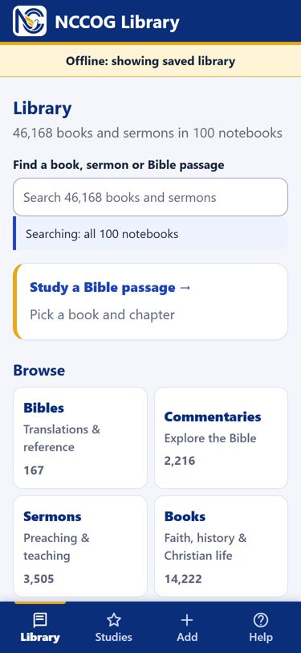
Stuck? Email Matt at mstaton53@gmail.com. Say what you tapped and what you saw; a screenshot helps.
12. Everything the library can't do (the honest list)
- The study notebook is named "Study Workspace NN", not your study's name. Google doesn't allow apps to rename notebooks. The app and Slot 01 tell you which study it is.
- Studies take about 10–15 minutes from tapping the button to being usable. Most of that is Google's own timing.
- 40 slots per study (about 25–35 books; a whole Bible uses about 5).
- Passage pages group by Bible book, not by verse, and only find books whose titles name that Bible book.
- About 55 of the 46,170 items can't go into studies yet while their files finish copying. Search still shows them, and they're still in their library notebooks.
- You can view the 100 library notebooks but not change them. To add things, use the app's Add tab.
- Gemini can be wrong. Check the citation numbers before teaching from an answer.
- Daily Gemini limits depend on your own Google plan.
- Everything here is free and public domain (or shared with permission). Books you buy and add for your own study are fine, but don't share the notebooks publicly.
- Archiving empties the book slots but not notes or audio you made in that notebook. Save or delete those first.
13. Quick reference card
| What | Where |
|---|---|
| The app | https://matt5306.github.io/nccog-library/ (access code dove-7314) |
| Gemini Notebook | https://notebook.google.com (sign in as mstaton2@gmail.com) |
| Gemini app (ask several notebooks at once) | https://gemini.google.com → + → More uploads → Notebooks |
| Start-here page with all 100 notebooks | The Overview Doc, in every notebook as 01-Overview |
| Questions and answers | The FAQ Doc, in every notebook as 02-FAQ |
| Help | Email Matt at mstaton53@gmail.com |
| Study wait time | Allow about 10–15 minutes |
| Study size | 40 slots (most books use 1; a whole Bible about 5) |
NCCOG Library — Questions and Answers
The app: https://matt5306.github.io/nccog-library/ (access code: dove-7314) · Help: email Matt at mstaton53@gmail.com The complete guide: 03-App-Guide, in every notebook, and in the app under Help.
Each answer below stands on its own, so links and steps are repeated where they're needed.
Getting in
What's the access code, and where do I type it? dove-7314. Open https://matt5306.github.io/nccog-library/, type it, and tap Continue. You only do this once on each phone or computer.
Do I need a Google account? Not for the app itself. You do need one for the notebooks. Use mstaton2@gmail.com, because that's the account the notebooks are shared with. If a notebook says you don't have access, check that you're signed in as mstaton2@gmail.com (tap your picture at the top right of the page).
How do I put the app on my phone?
- iPhone: open https://matt5306.github.io/nccog-library/ in Safari → tap Share (the square with the up arrow; on some iPhones it's under ⋯) → Add to Home Screen → Add.
- Android: open it in Chrome → tap Install if a bar appears, or ⋮ → Install app / Add to Home screen.
The app's Help tab shows pictures of these steps.
Finding things
How do I search? Open the app (https://matt5306.github.io/nccog-library/, code dove-7314) → Library tab → type in the box at the top. Titles and authors are searched. Small typos and partial words work: spurgen finds Spurgeon, rom finds Romans.
Why don't I see the Quran or other religions' books in my search? They're in two separate notebooks labeled Other Faiths, kept for reference only. To include them, swipe the filter-button row under the search box and tap Include Other Faiths. They are never added by any "Add all" button.
How do I find everything on a Bible passage? Library tab → Study a Bible passage → book → chapter. Or type Romans 8 or 1 Cor 13 in the search box and tap the suggestion. The page groups commentaries, translations, sermons, books and journals by Bible book. It isn't verse-by-verse, so Romans 8 shows everything about Romans.
Why does the same title appear twice? Usually it's two volumes (Vol. 1 and Vol. 2), two different authors with the same title, or two editions. True duplicates have been merged.
What does "Part of a bundle" mean? Some short works are stored together in one file. Adding one to a study brings the whole bundle along. That's harmless; it just uses a little more room.
Studies (your own notebooks)
What's a study? A Gemini notebook containing only the books you pick, so every answer comes from exactly those books. You can chat in it, take notes, and make audio overviews, study guides, quizzes and mind maps.
How do I make one? In the app (https://matt5306.github.io/nccog-library/, code dove-7314):
- Tap + Add to shelf on the books you want.
- Tap Review on the shelf bar at the bottom.
- Name the study.
- Tap Make my study notebook.
- Allow about 10–15 minutes, then go to Studies → Open notebook.
Why does it take 10–15 minutes? The app copies the books into the notebook, which usually takes under 5 minutes. Then Google's Gemini takes a few more minutes to read them in. The second part is Google's timing and can't be sped up. You can close the app while you wait.
The app says Ready, but the notebook still shows "Empty study slot". What now? Gemini hasn't re-read the slots yet. Wait 5 minutes and reopen the notebook. Or tap any slot on the left side of the notebook, then tap Click to sync with Google Drive at the top.
Why is my notebook called "Study Workspace 07" and not my study's name? Google doesn't let apps rename notebooks. The app's Studies tab shows which workspace holds which study, and Slot 01 inside the notebook lists the study name and every book in it.
How many books fit in a study? Each study has 40 slots, and each slot holds about 150,000 words. Most books take 1 slot, big books 2–3, and a whole Bible about 5. Slot 1 is the table of contents. Typically that's 25–35 books. The review screen shows a slot meter, and the app won't let you build a study that doesn't fit.
Can I change a study after it's built? Yes:
- Studies tab → tap the study. It becomes your active shelf ("Adding to: …").
- Add or remove books.
- Tap Update my notebook.
Allow 10–15 minutes again.
How long can I keep a study? As long as you want. Nothing expires.
What does Archive do? It empties the workspace's 40 book slots so the workspace can be used again. Your list of books stays saved in the app, so you can rebuild later. Notes, audio overviews and reports you made inside that notebook are not removed by archiving. Save or delete them first, so the next study in that workspace starts clean.
What happens when all 20 workspaces are used? The app says so, and your draft stays safe. Matt is emailed automatically when only 3 are left, and he adds 10 more. Google allows several hundred, so there's room to grow.
Can I add my own files to a study notebook in Gemini? Please don't add or remove sources in Study Workspace notebooks directly. The app manages the 40 slots, and removing one breaks the study. To add a book to the library, use the app's Add tab. To put it in a study, add it to your shelf.
Is my study on my other devices too? Yes. Your shelf and studies are saved on the server. The review screen says ✓ Saved for your other devices.
Using the notebooks
How do I ask a question? Open a notebook. In the app, use Open notebook on any item or study, or go to https://notebook.google.com signed in as mstaton2@gmail.com. Type a question in the box at the bottom. Tap the little numbers in the answer to see the exact source passage.
Can I ask several notebooks at once? Yes, in the Gemini app:
- Go to https://gemini.google.com.
- Tap + next to the question box.
- Tap More uploads → Notebooks.
- Tick 2 or more notebooks → Add.
- Ask your question.
It's best for quick, broad questions. For exactly-these-books work, build a study instead.
Why can't I make an audio overview in a library notebook? You have viewer access to the 100 library notebooks, which may limit Studio features. Your study notebooks give you full editor access. Build a study with the books you want and make the audio overview there.
Is Gemini always right? No. It can misread or overstate things. Always check the citation numbers before you teach or preach from an answer.
Gemini says I've reached a limit. Google limits questions and audio overviews per person. The limit depends on your own Google plan and refreshes after a few hours.
Adding to the library
How do I add a sermon? App (https://matt5306.github.io/nccog-library/, code dove-7314) → Add tab:
- Tap Sermon.
- Choose YouTube link, Audio file, Document file or Paste text.
- Fill in the title and the rest of the details.
- Leave the notebook on Automatic.
- Tap Add to the library.
Wait about 5–10 minutes before asking the notebook about it.
My YouTube video won't add. It must be public or unlisted, and brand-new videos (under about 3 days old) sometimes can't be read yet. Try again later, or upload the audio file instead (MP3, M4A or WAV, up to 30 MB).
My PDF won't add. Scanned books (pictures of pages) and Kindle books can't be read. Wait for ✓ Read … words before tapping Add. If it never appears, email Matt.
Everything else
Does the app work without internet? Searching and browsing work offline once the app has loaded before. A banner says Offline: showing saved library. Building studies and adding items need internet.
Is any of this costing money? No. The books are free and public domain (or shared with permission), and the app is free.
Can I share the notebooks? Please don't share them publicly. Some items were added for personal study.
Something's broken. Every error in the app says what happened, whether anything was saved, and what to do. If you're stuck, email Matt at mstaton53@gmail.com. Say what you tapped and what you saw; a screenshot helps.
NCCOG Library — Start Here
The app: https://matt5306.github.io/nccog-library/ (access code: dove-7314) Help: email Matt at mstaton53@gmail.com The complete guide: the App Guide Doc, in every notebook as 03-App-Guide. It's also in the app under Help → Read the complete guide.
What this is
A free Christian research library for New Creation Church of God, built on Google's Gemini Notebook:
- 100 library notebooks holding about 46,000 free books: commentaries, Bibles, sermons, theology, history, journals and old church papers, sorted by topic. Ask any notebook a question and it answers from its books, with a citation number for every claim.
- A phone and computer app to search everything, start from a Bible passage, build your own study notebooks, and add sermons and books. Link: https://matt5306.github.io/nccog-library/ (code dove-7314).
- 20 study workspaces, yours to fill. Pick books in the app, tap Make my study notebook, and allow about 10–15 minutes. The workspace then holds exactly those books, and you can chat, take notes, and make audio overviews, study guides and quizzes from them.
Start in five steps
- Open https://matt5306.github.io/nccog-library/ and type the code dove-7314.
- Put it on your home screen. On iPhone: Safari → Share → Add to Home Screen. On Android: Chrome → ⋮ → Install app.
- Search for anything (Romans, Spurgeon, holiness), or tap Study a Bible passage.
- Tap + Add to shelf on the books you want, then Review → Make my study notebook.
- After about 10–15 minutes, go to Studies → Open notebook, and ask your first question.
Your access (signed in as mstaton2@gmail.com)
| Notebooks | Your access | What you can do |
|---|---|---|
| The 100 library notebooks (list below) | Viewer | Read and ask questions. To add things, use the app's Add tab. |
| Study Workspace 01–20 (list below) | Editor | Everything: chat, notes, audio overviews, reports, mind maps, quizzes. Please don't add or remove sources. The app manages them. |
The 20 study workspaces
The app fills these for you when you build a study. You can open any of them directly, but the app's Studies tab tells you which study is in which workspace.
- Study Workspace 01
- Study Workspace 02
- Study Workspace 03
- Study Workspace 04
- Study Workspace 05
- Study Workspace 06
- Study Workspace 07
- Study Workspace 08
- Study Workspace 09
- Study Workspace 10
- Study Workspace 11
- Study Workspace 12
- Study Workspace 13
- Study Workspace 14
- Study Workspace 15
- Study Workspace 16
- Study Workspace 17
- Study Workspace 18
- Study Workspace 19
- Study Workspace 20
All 100 library notebooks
Tap a name to open it in Gemini Notebook. The two Other Faiths notebooks are not Christian teaching. They are kept for reference and comparison only, are clearly labeled, and never appear in the app's search unless you turn them on.
- Bible Commentary Library: Classic commentaries on all 66 books of the Bible, plus book-by-book expositions.
- Bible Reference: Bible dictionaries, encyclopedia (ISBE), topical Bible, Josephus, Edersheim and other reference works.
- NCCOG Sermons: Sermons preached or heard at New Creation Church of God, added through the app.
- Pentecostal & Holiness Heritage: Holy Spirit, divine healing, holiness and sanctification, revival; Church of God, Pentecostal and Wesleyan-holiness writers.
- Marriage & Family: Marriage, parenting, the Christian home.
- Discipleship & Prayer: Spiritual growth, prayer, Christian living.
- Devotional Classics: Classic devotional writing for daily reading and meditation.
- Theology & Doctrine: What Christians believe and why: theology, creeds, apologetics.
- Puritan Classics: Owen, Sibbes, Goodwin, Flavel, Watson, Brooks, Bunyan, Boston and other Puritans.
- Church Fathers: The early church: Ante-Nicene and Nicene/Post-Nicene Fathers (Schaff edition).
- Church History & Biography: Church history, missions, revivals and Christian biographies.
- Preaching & Pastoral Ministry: How to preach, lead and shepherd a church.
- Sermons of the Great Preachers: Classic sermons: Wesley, Edwards, Whitefield, Moody, Finney and others (plus a few Spurgeon volumes).
- Spurgeon Sermons: Spurgeon's Metropolitan Tabernacle and New Park Street sermons, volume by volume.
- General Library: Everything that doesn't fit elsewhere.
- Church of God History & Periodicals: Church of God (Cleveland, TN) history: Church of God Evangel 1910-1930 and Lighted Pathway by year, Assembly minutes, manuals and denominational histories.
- Seminary Courses: Free seminary courses and curricula: lesson transcripts and study guides, one course per source.
- Theological Journals & Papers: Free theological journal articles, papers and theses, bundled by journal volume.
- Other Faiths: World Religions: NOT CHRISTIAN TEACHING. Other religions' own scriptures (Quran, Buddhist, Hindu, Jewish and other texts) in old public-domain translations, for reference and comparison only.
- Other Faiths: Groups Outside Orthodox Christianity: NOT ORTHODOX CHRISTIAN TEACHING. Writings of groups that use Christian language but reject core Christian doctrine (Jehovah's Witness origins, Latter-day Saints, Christian Science and others), for reference and comparison only.
- Periodicals: Gospel Trumpet (Church of God, Anderson): The Gospel Trumpet, the Church of God (Anderson) paper, 1881-1922, one source per year.
- Periodicals: Holiness (Nazarene, Guide to Holiness, C&MA): Holiness-movement periodicals: Herald of Holiness and Nazarene Messenger (Church of the Nazarene), Guide to Holiness, Christian and Missionary Alliance; by year.
- Periodicals: Early Pentecostal (Azusa, AG, Latter Rain, Confidence): Early Pentecostal papers: Azusa Street Apostolic Faith (1906-08), Pentecostal Evangel, Word and Witness, Latter Rain Evangel, The Pentecost, Confidence (UK); by year.
- Holiness Movement Classics: Holiness-movement books: Wesleyan-holiness, Church of the Nazarene, Free Methodist and Church of God (Anderson) writers on holiness, sanctification and revival.
- Theological Journals: South African Open Access (HTS, Verbum et Ecclesia, In die Skriflig, Koers): Open-access academic theology journals from South Africa (Creative Commons). Broad academic range, including critical scholarship; not all reflect evangelical or Pentecostal views.
- Apologetics & Christian Evidences: Defenses of the Christian faith: evidences, replies to skeptics, science and faith.
- Bible Studies & Expositions: Expositions and studies of individual Bible books and passages (beyond the classic commentaries).
- Catholic & Orthodox Writings: Works by Roman Catholic and Eastern Orthodox authors: theology, devotion, saints, history. Labeled by tradition.
- Christian Biography: Lives, memoirs, letters and journals of Christians and ministers.
- Christian Literature & Fiction: Christian novels, allegories, stories, Christmas books and literary works.
- Christian Living & Ethics: Practical Christian living, morals, duties, social questions, Sabbath, temperance, stewardship.
- Church History: Early & Medieval: The church from the apostles to about 1500: councils, early and medieval church, monasticism, Waldenses.
- Church Polity & Controversy: Church government, establishment and denominational controversies (many Anglican), ecclesiastical law.
- Hymns, Worship & Christian Poetry: Hymns, hymnals, worship, liturgy, the church year and Christian poetry.
- Missions & Evangelism: Missions history, missionaries' accounts and evangelism.
- Bible Translations (Public Domain): Complete public-domain Bible translations for comparing wording: KJV, ASV, Young's Literal, Darby, Douay-Rheims, World English Bible, Webster, Geneva, Tyndale NT, Weymouth, Rotherham, Brenton Septuagint and more.
- Wesley & Wesleyan-Holiness Writings: John Wesley's works (incl. A Christian Library) and 19th-20th century Wesleyan-holiness and Methodist writers (Carradine, Bud Robinson, Ridout, Steele, Wood and others).
- Sanctification & Christian Perfection: Holiness doctrine: entire sanctification, perfect love, the second blessing, the higher and victorious life, Keswick teaching.
- Revivals & Evangelists: Revival history, camp meetings, evangelistic campaigns and evangelists' sermons and accounts.
- Prayer & the Spiritual Life: Prayer and the inner spiritual life: teaching on prayer, faith and spiritual growth.
- Sunday School & Christian Education: Sunday school, Bible teaching, youth work, catechesis and Christian education.
- Prophecy & the Second Coming: Bible prophecy, the second coming, the millennium, Daniel and Revelation, last things.
- Holy Spirit & Divine Healing: The person and work of the Holy Spirit, the baptism and filling of the Spirit, spiritual gifts, divine healing.
- Bible Studies: Old Testament: Studies and expositions of Old Testament books, characters, Psalms and prophets.
- Bible Studies: New Testament: Studies and expositions of New Testament books, the Gospels, the life of Christ and Paul's letters.
- Ministers' & Missionaries' Lives: Biographies and memoirs of ministers, evangelists and missionaries.
- Mission History & Fields: Histories of missions and mission fields, missionary travel narratives and reports (19th to early 20th century).
- Doctrinal Treatises: Doctrinal books and treatises on specific doctrines (atonement, Trinity, sin, grace, the church, sacraments and more).
- Sermons & Discourses (Anglican, Reformed, Methodist, Catholic): Sermons and discourses from Anglican, Reformed, Methodist, Catholic and other preachers (overflow from the main sermon notebooks).
- Church History: Britain & Protestant Churches: Histories of churches in Britain and Ireland, the Reformation and Protestant churches.
- Pastoral Ministry & Homiletics: Preaching and sermon preparation, pastoral care and ministerial training.
- Anglican Sermons & Discourses: Anglican and Episcopal sermons and discourses.
- Apologetics & Christian Evidences, Vol. 2: More historical Christian apologetics, evidences and defenses of the faith.
- Catholic & Orthodox Church History: Histories of Catholic and Orthodox churches, institutions and the papacy.
- Catholic & Orthodox Sermons: Catholic and Orthodox sermons and homilies.
- Catholic & Orthodox Spiritual Formation: Catholic and Orthodox devotional and spiritual writing.
- Christian Sermons & Discourses (1762–1849): Christian sermons and religious discourses published 1762–1849.
- Christian Sermons & Discourses (1850–1889): Christian sermons and religious discourses published 1850–1889.
- Christian Sermons & Discourses (1890–1929): Christian sermons and religious discourses published 1890–1929.
- Church History & Biography, Vol. 2: More church history and Christian biography.
- Church History: Early & Medieval, Vol. 2: More studies of ancient and medieval Christianity.
- Pastoral Ministry & Homiletics, Vol. 2: More on pastoral care, ministerial formation and sermon preparation.
- Reformed Sermons & Discourses (1805–1899): Reformed, Presbyterian, Puritan and Congregational sermons published 1805–1899.
- Reformed Sermons & Discourses (1900–1925): Reformed, Presbyterian, Puritan and Congregational sermons published 1900–1925.
- Apologetics & Christian Evidences, Vol. 3: More defenses of the Christian faith: evidences, replies to skeptics, science and faith.
- Bible Studies & Expositions, Vol. 2: More expositions and studies of individual Bible books and passages (beyond the classic commentaries).
- Bible Studies & Expositions, Vol. 3: More expositions and studies of individual Bible books and passages (beyond the classic commentaries).
- Bible Studies & Expositions, Vol. 4: More expositions and studies of individual Bible books and passages (beyond the classic commentaries).
- Bible Studies & Expositions, Vol. 5: More expositions and studies of individual Bible books and passages (beyond the classic commentaries).
- Bible Studies & Expositions, Vol. 6: More expositions and studies of individual Bible books and passages (beyond the classic commentaries).
- Bible Studies & Expositions, Vol. 7: More expositions and studies of individual Bible books and passages (beyond the classic commentaries).
- Bible Studies & Expositions, Vol. 8: More expositions and studies of individual Bible books and passages (beyond the classic commentaries).
- Catholic & Orthodox Writings, Vol. 2: More works by Roman Catholic and Eastern Orthodox authors: theology, devotion, saints, history. Labeled by tradition.
- Christian Biography, Vol. 2: More lives, memoirs, letters and journals of Christians and ministers.
- Christian Biography, Vol. 3: More lives, memoirs, letters and journals of Christians and ministers.
- Christian Living & Ethics, Vol. 2: More practical Christian living, morals, duties, social questions, Sabbath, temperance, stewardship.
- Christian Living & Ethics, Vol. 3: More practical Christian living, morals, duties, social questions, Sabbath, temperance, stewardship.
- Church History & Biography, Vol. 3: More church history, missions, revivals and Christian biographies.
- Church History: Britain & Protestant Churches, Vol. 2: More histories of churches in Britain and Ireland, the Reformation and Protestant churches.
- Church History: Britain & Protestant Churches, Vol. 3: More histories of churches in Britain and Ireland, the Reformation and Protestant churches.
- Church History: Early & Medieval, Vol. 3: More the church from the apostles to about 1500: councils, early and medieval church, monasticism, Waldenses.
- Church Polity & Controversy, Vol. 2: More church government, establishment and denominational controversies (many Anglican), ecclesiastical law.
- Church Polity & Controversy, Vol. 3: More church government, establishment and denominational controversies (many Anglican), ecclesiastical law.
- Doctrinal Treatises, Vol. 2: More doctrinal books and treatises on specific doctrines (atonement, Trinity, sin, grace, the church, sacraments and more).
- Doctrinal Treatises, Vol. 3: More doctrinal books and treatises on specific doctrines (atonement, Trinity, sin, grace, the church, sacraments and more).
- Doctrinal Treatises, Vol. 4: More doctrinal books and treatises on specific doctrines (atonement, Trinity, sin, grace, the church, sacraments and more).
- Doctrinal Treatises, Vol. 5: More doctrinal books and treatises on specific doctrines (atonement, Trinity, sin, grace, the church, sacraments and more).
- Hymns, Worship & Christian Poetry, Vol. 2: More hymns, hymnals, worship, liturgy, the church year and Christian poetry.
- Ministers' & Missionaries' Lives, Vol. 2: More biographies and memoirs of ministers, evangelists and missionaries.
- Missions & Evangelism, Vol. 2: More missions history, missionaries' accounts and evangelism.
- Missions & Evangelism, Vol. 3: More missions history, missionaries' accounts and evangelism.
- Prayer & the Spiritual Life, Vol. 2: More prayer and the inner spiritual life: teaching on prayer, faith and spiritual growth.
- Sermons & Discourses (Anglican, Reformed, Methodist, Catholic), Vol. 2: More sermons and discourses from Anglican, Reformed, Methodist, Catholic and other preachers (overflow from the main sermon notebooks).
- Sermons & Discourses (Anglican, Reformed, Methodist, Catholic), Vol. 3: More sermons and discourses from Anglican, Reformed, Methodist, Catholic and other preachers (overflow from the main sermon notebooks).
- Sunday School & Christian Education, Vol. 2: More sunday school, Bible teaching, youth work, catechesis and Christian education.
- Theological Journals & Papers, Vol. 2: More free theological journal articles, papers and theses, bundled by journal volume.
- Theology & Doctrine, Vol. 2: More what Christians believe and why: theology, creeds, apologetics.
- Theology & Doctrine, Vol. 3: More what Christians believe and why: theology, creeds, apologetics.
- Theology & Doctrine, Vol. 4: More what Christians believe and why: theology, creeds, apologetics.
- Wesley & Wesleyan-Holiness Writings, Vol. 2: More john Wesley's works (incl. A Christian Library) and 19th-20th century Wesleyan-holiness and Methodist writers (Carradine, Bud Robinson, Ridout, Steele, Wood and others).
Where to get help
- In the app: the Help tab.
- The complete guide: 03-App-Guide, in every notebook.
- Questions and answers: 02-FAQ, in every notebook.
- A person: email Matt at mstaton53@gmail.com. Say what you tapped and what you saw; a screenshot helps.